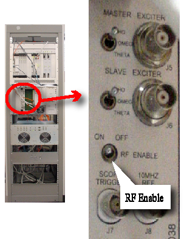
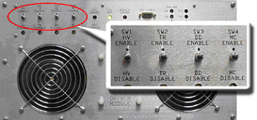

Proprietary to General Electric Company
Direction 5440000, Rev# 5
Signa HDxt Service Methods
Module Version 1.0, Version Date 4/26/07
Proprietary to General Electric Company |
| Required Persons | Preliminary Reqs | Procedure | Finalization |
|---|---|---|---|
| 1 | Not Applicable | 15 mins | 20 mins |
Head Phantom Coil Setup and Test. For an overview of this procedure see 1.5T Pin Diode Test Overview.
| Item | Qty | Effectivity | Part# | Manufacturer | |
|---|---|---|---|---|---|
| NiCl2 TLT Head Sphere Phantom | 1 | - | 46-265826G6 | - | |
| Head Loader Phantom | 1 | - | 46-287899G1 | - | |
| Head Coil Tuning Ring Phantom | 1 | - | 46-287416G1 | - | |
| ||||
| POISON HAZARD! | ||||
| PHANTOM CONTAINS NICKEL, A SUSPECT CARCINOGEN. | ||||
| DO NOT INGEST. DISPOSE OF AS A HAZARDOUS WASTE ACCORDING TO STATE AND FEDERAL REGULATIONS. |
Disable the Exciter RF Output, by setting the RF Enable toggle switch (located on the front panel I/O board), to the OFF position. (See Illustration 1).
Illustration 1: RF DISABLED FOR SCAN

Run the Noise Only Test using Head Coil Section. Record resulting noise value.
Disconnect J6 (Head T/R Bias) on the rear of the Driver Module.
Disable TR Fault detection by switching SW2 to TR DISABLE as shown in Illustration 2:
Illustration 2: Driver Module Switches

| NOTE: | Possible Equipment Damage. Do not select [Manual Prescan], [Auto Prescan], or [Scan] after any Bias lines are disconnected with the RF OUT enabled. The RF chain components may be damaged. |
Run the Noise Only Test again and record resulting noise value.
Compare the noise value for the Head TR Bias cable “disconnected” to the noise value for the Head TR Bias cable “connected”.
If there is less than a 0.06 difference, the pin diodes are not leaky (normally the noise values should be very close if the results are good).
| NOTE: | If there is more than a difference of 0.06, then a leaky PIN diode is indicated in the Head T/R switch, Head preamplifier, or coil. |
Re-connect J6 (Head T/R Bias) on the rear panel of the Driver Module.
Remove Head phantom and loader.
Remove Head Coil from magnet bore.
Proceed to Finalization, Step 1.
Verify that the system is not in manual prescan or scanning, the scan desktop icon will display the Idle message.
Place the Fault Detection TR Switch to normal system configuration TR Enable on the Driver Module.
Ensure that all the TR Bias cables (J6, J7) are reconnected at the rear of the Driver Module.
Enable the Exciter RF Output, by setting the RF Enable toggle switch (located on the front panel of the Front Plane I/O Board), to the ON position.
Put all covers back on.
Perform one body scan.
Perform One Head scan.